토목기사 (2019-08-04 기출문제)
1과목: 응용역학
1. 단면의 성질에 대한 설명으로 틀린 것은?
- 단면2차 모멘트의 값은 항상 0보다 크다.
- 도심 측에 대한 단면1차 모멘트의 값은 항상 0이다.
- 단면 상승 모멘트의 값은 항상 0보다 크거나 같다.
- 단면2차 극모멘트의 값은 항상 극을 원점으로 하는 두 직교좌표축에 대한 단면2차 모멘트의 합과 같다.
(정답률: 65%)

2. 그림과 같은 라멘에서 A점의 수직반력(RA)은?
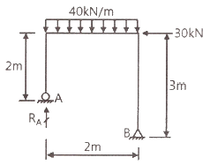
- 65 kN
- 75 kN
- 85 kN
- 95 kN
(정답률: 60%)
3. 그림과 같은 단면의 단면 상승 모멘트 Ixy는?
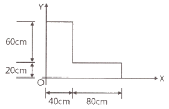
- 3360000 cm4
- 3520000 cm4
- 3840000 cm4
- 4000000 cm4
(정답률: 64%)
4. 어떤 금속의 탄성계수(E)가 21×104 MPa 이고, 전단 탄성계수(G)가 8×104 MPa일 때, 금속의 푸아송 비는?
- 0.3075
- 0.3125
- 0.3275
- 0.3325
(정답률: 68%)
5. 다음 그림에 있는 연속보의 B점에서의 반력은? (단, E = 2.1 × 105 MPa, I = 1.6 × 104 cm4)
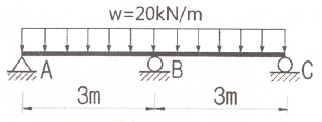
- 63 kN
- 75 kN
- 97 kN
- 101 kN
(정답률: 61%)
6. 그림과 같은 양단 내민보에서 C점(중앙점)에서 휨모멘트가 0이 되기 위한
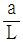
는? (단, P = ωL)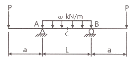
- 1/2
- 1/4
- 1/7
- 1/8
(정답률: 46%)
7. 다음 3힌지 아치에서 수병반력 HB 는?
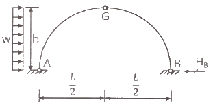
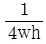
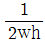
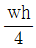
- 2wh
(정답률: 65%)
8. 동일한 재료 및 단면을 사용한 다음 기둥 중 좌굴하중이 가장 큰 기둥은?
- 양단 힌지의 길이가 L인 기둥
- 양단 고정의 길이가 2L인 기둥
- 일단 자유 타단 고정의 길이가 0.5L인 기둥
- 일단 힌지 타단 고정의 길이가 1.2L인 기둥
(정답률: 62%)
9. 길이 5m, 단면적 10cm2 의 강봉을 0.5mm 늘이는 데 필요한 인장력은? (단, 탄성계수 E = 2 × 105 MPa 이다.)
- 20 kN
- 30 kN
- 40 kN
- 50 kN
(정답률: 54%)
10. 그림과 같이 두 개의 도르래를 사용하여 물체를 매달 때, 3개의 물체가 평형을 이루기 위한 각 θ 값은? (단, 로프와 도르래의 마찰은 무시한다.)
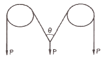
- 30˚
- 45˚
- 60˚
- 120˚
(정답률: 64%)
11. 다음 그림에서 P1 와 R 사이의 각 θ를 나타낸 것은?
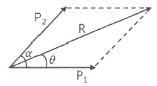
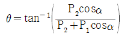
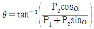
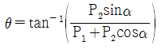
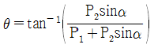
(정답률: 60%)
12. 외반경 R1, 내반경 R2 인 중공(中空) 원형단면의 핵은? (단, 핵의 반경을 e로 표시함)
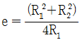
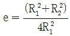
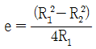
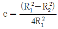
(정답률: 52%)
13. 그림과 같이 단순지지된 보에 등분포하중 q가 작용하고 있다. 지점 C의 부모멘트와 보의 중앙에 발생하는 정모멘트의 크기를 같게하여 등분포하중 q의 크기를 제한하려고 한다. 지점 C와 D는 보의 대칭거동을 유지하기 위하여 각각 A와 B로부터 같은 거리에 배치하고자 한다. 이때 보의 A점으로부터 지점 C의 거리 X는?
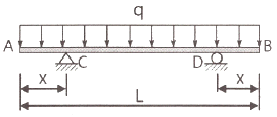
- 0.207 L
- 0.250 L
- 0.333 L
- 0.444 L
(정답률: 51%)
14. 아래 그림과 같은 캔틸레버 보에서 B점의 연직변위(δB)는? (단, Mo = 4 kN·m, P = 16 kN, L = 2.4m, EI = 6000 kN·m2 이다.)
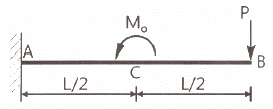
- 1.08 cm(↓)
- 1.08 cm(↑)
- 1.37 cm(↓)
- 1.37 cm(↑)
(정답률: 52%)
15. 자중이 4kN/m인 그림(a)와 같은 단순보에 그림(b)와 같은 차륜하중이 통과할 때 이 보에 일어나는 최대 전단력의 절댓값은?
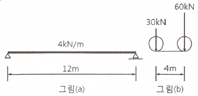
- 74 kN
- 80 kN
- 94 kN
- 104 kN
(정답률: 41%)
16. 재질의 단면이 같은 다음 2개의 외팔보에서 자유단의 처짐을 같게 되는
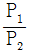
의 값은?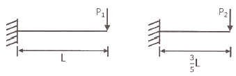
- 0.216
- 0.325
- 0.437
- 0.546
(정답률: 64%)
17. 그림과 같은 보정정보에서 지점A의 휨모멘트 값을 옳게 나타낸 것은? (단, EI는 일정)
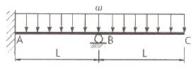
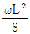
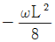
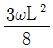
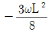
(정답률: 41%)
18. 그림과 같은 보에서 A점의 반력은?
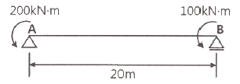
- 15 kN
- 18 kN
- 20 kN
- 23 kN
(정답률: 58%)
19. 그림과 같은 단면에 15kN의 전단력이 작용할 때 최대 전단응력의 크기는?
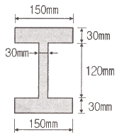
- 2.86 MPa
- 3.52 MPa
- 4.74 MPa
- 5.95 MPa
(정답률: 60%)
20. 아래 보기에서 설명하고 있는 것은?
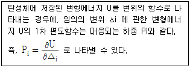
- 중첩의 원리
- Castigliano의 정리
- Betti의 정리
- Maxwell의 정리
(정답률: 66%)
2과목: 측량학
21. 축적 1:2000의 도면에서 관측한 면적이 2500 m2 이었다. 이때, 도면의 가로와 세로가 각각 1% 줄었다면 실제 면적은?
- 2451 m2
- 2475 m2
- 2525 m2
- 2551 m2
(정답률: 37%)
22. 삼각수준측량에 의해 높이를 측정할 때 기지점과 미지점의 쌍방에서 연직각을 측정하여 평균하는 이유는?
- 연직축오차를 최소하하기 위하여
- 수평분도원의 편심오차를 제거하기 위하여
- 연직분도원의 눈금오차를 제거하기 위하여
- 공기의 밀도변화에 의한 굴절 오차의 영향을 소거하기 위하여
(정답률: 34%)
23. 시가지에서 25변형 트래버스 측량을 실시하여 2′ 50″ 의 각관측 오차가 발생하였다면 오차의 처리 방법으로 옳은 것은? (단, 시가지의 측각 허용범위 = ±20″√n – 30″√n, 여기서 n은 트래버스의 측점 수)
- 오차가 허용오차 이상이므로 다시 관측하여야 한다.
- 변의 길이의 역수에 비례하여 배분한다.
- 변의 길이에 비례하여 배분한다.
- 각의 크기에 따라 배분한다.
(정답률: 53%)
24. 삼각점 C에 기계를 세울 수 없어서 2.5m를 편심하여 B에 기계를 설치하고 T′ = 31˚ 15′ 40″ 를 얻었다면 T는? (단, ø = 300° 20′, S1 = 2km, S2 = 3km)
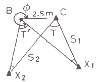
- 31° 14′ 49″
- 31° 15′ 18″
- 31° 15′ 29″
- 31° 15′ 41″
(정답률: 37%)
25. 승강식 야장이 표와 같이 작성되었다고 가정할 때, 성과를 검산하는 방법으로 옳은 것은? (여기서, ⓐ-ⓑ는 두 값의 차를 의미한다.)
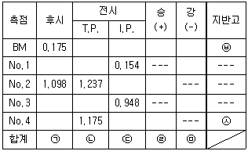
- ㉦-㉥ = ㉠-㉡ = ㉣-㉤
- ㉦-㉥ = ㉠-㉢ = ㉣-㉤
- ㉦-㉥ = ㉠-㉣ = ㉡-㉤
- ㉦-㉥ = ㉡-㉣ = ㉢-㉤
(정답률: 45%)
26. 완화곡선 중, 클로소이드에 대한 설명으로 옳지 않은 것은? (단, R : 곡선반지름, L : 곡선길이)
- 클로소이드는 곡률이 곡선길이에 비례하여 증가하는 곡선이다.
- 클로소이드는 나선의 일종이며 모든 클로소이드는 닮은꼴이다.
- 클로소이드의 종점 좌표 x, y는 그 점의 접선각의 함수로 표시된다.
- 클로소이드에서 접선각 τ을 라디안으로 표시하면
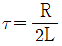
이 된다.
(정답률: 57%)
27. 1:50000 지형도의 주곡선 간격은 20m이다. 지형도에서 4% 경사의 노선을 선정하고자 할 때 주곡선 사이의 도상수평거리는?
- 5 mm
- 10 mm
- 15 mm
- 20 mm
(정답률: 41%)
28. 곡선반지름이 400m인 원곡선을 설계속도 70km/h로 할 때 캔트(cant)는? (단, 궤간 b = 1.065m)
- 73 mm
- 83 mm
- 93 mm
- 103 mm
(정답률: 55%)
29. 수애선이 기준이 되는 수위는?
- 평수위
- 평균수위
- 최고수위
- 최저수위
(정답률: 62%)
30. 측점 M의 표고를 구하기 위하여 수준점 A, B, C로부터 수준측량을 실시하여 표와 같은 결과를 얻었다면 M의 표고는?
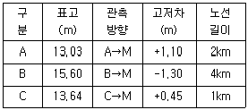
- 14.13 m
- 14.17 m
- 14.22 m
- 14.30 m
(정답률: 56%)
31. 다각측량에서 어떤 폐합다각망을 측량하여 위거 및 경거의 오차를 구하였다. 거리와 각을 유사한 정밀도로 관측하였다면 위거 및 경거의 폐합오차를 배분하는 방법으로 가장 적합한 것은?
- 측선의 길이에 비례하여 분배한다.
- 각각의 위거 및 경거에 등분배한다.
- 위거 및 경거의 크기에 비례하여 배분한다.
- 위거 및 경거 절대값의 총합에 대한 위거 및 경거 크기에 비례하여 배분한다.
(정답률: 42%)
32. 방위각 153˚ 20′ 25″ 에 대한 방위는?
- E 63˚ 20′ 25″ S
- E 26˚ 39′ 35″ S
- S 26˚ 39′ 35″ E
- S 63˚ 20′ 25″ E
(정답률: 52%)
33. 고속도로 공사에서 각 측점의 단면적이 표와 같을 때, 측점 10에서 측점 12개까지의 토량은? (단, 양단면평균법에 의해 계산한다.)
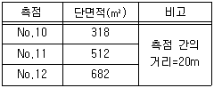
- 15120 m3
- 20160 m3
- 20240 m3
- 30240 m3
(정답률: 50%)
34. 어느 각을 10번 관측하여 52˚ 12′ 을 2번, 52˚ 13′을 4번, 52˚ 14′을 4번 얻었다면 관측한 각의 최확값은?
- 52˚ 12′ 45″
- 52˚ 13′ 00″
- 52˚ 13′ 12″
- 52˚ 13′ 45″
(정답률: 48%)
35. 100m의 측선을 20m 줄자로 관측하였다. 1회의 관측에 +4mm의 정오차와 ±3mm의 부정오차가 있었다면 측선의 거리는?
- 100.010 ± 0.007 m
- 100.010 ± 0.015 m
- 100.020 ± 0.007 m
- 100.020 ± 0.015 m
(정답률: 56%)
36. 삼각측량을 위한 기준점성과표에 기록되는 내용이 아닌 것은?
- 점번호
- 도엽명칭
- 천문경위도
- 평면직각좌표
(정답률: 56%)
37. 기준면으로부터 어느 측점까지의 연직 거리를 의미하는 용어는?
- 수준선(level line)
- 표고(elevation)
- 연직선(plumb line)
- 수평면(horizontal plane)
(정답률: 49%)
38. 곡률이 급변하는 평면 곡선부에서의 탈선 및 심한 흔들림 등의 불안정한 주행을 막기 위해 고려하여야 하는 사항과 가장 거리가 먼 것은?
- 완화곡선
- 종단곡선
- 캔트
- 슬랙
(정답률: 45%)
39. 지성선에 관한 설명으로 옳지 않은 것은?
- 철(凸)선을 능선 또는 분수선이라 한다.
- 경사변환선이란 동일 방향의 경사면에서 경사의 크기가 다른 두 면의 접합선이다.
- 요(凹)선은 지표의 경사가 최대로 되는 방향을 표시한 선으로 유하선이라고 한다.
- 지성선은 지표면이 다수의 평면으로 구성되었다고 할 때 평면간 접합부 즉 접선을 말하며 지세선이라고도 한다.
(정답률: 58%)
40. 하천의 평균유속(Vm)을 구하는 방법 중 3점법으로 옳은 것은? (단, V2, V4, V6, V8 은 각각 수면으로부터 수심(h)의 0.2h, 0.4h, 0.6h, 0.8h인 곳의 유속이다.)
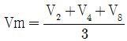
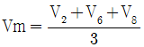
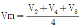
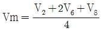
(정답률: 62%)
3과목: 수리학 및 수문학
41. 도수가 15m 폭의 수문 하류 측에서 발생되었다. 도수가 일어나기 전의 깊이가 1.5m이고 그때의 유속은 18m/s였다. 도수로 인한 에너지 손실 수두는? (단, 에너지 보정계수 α = 1 이다.)
- 3.24 m
- 5.40 m
- 7.62 m
- 8.34 m
(정답률: 25%)
42. 직사각형의 위어로 유량을 측정할 경우 수두 H를 측정할 때 1%의 측정오차가 있었다면 유량 Q에서 예상되는 오차는?
- 0.5%
- 1.0%
- 1.5%
- 2.5%
(정답률: 52%)
43. 강우강도를 I, 침투능을 f, 총 침투량을 F, 토양수분 미흡량을 D라 할 때, 지표유출은 발생하나 지하수위는 상승하지 않는 경우에 대한 조건식은?
- I ＜ f , F ＜ D
- I ＜ f , F ＞ D
- I ＞ f , F ＜ D
- I ＞ f , F ＞ D
(정답률: 49%)
44. 그림에서 손실수두가
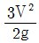
일 때 지름 0.1m의 관을 통과하는 유량은? (단, 수면은 일정하게 유지된다.)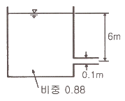
- 0.0399 m3/s
- 0.0426 m3/s
- 0.0798 m3/s
- 0.085 m3/s
(정답률: 43%)
45. 그림과 같이 뚜껑이 없는 원통 속에 물을 가득 넣고 중심 축 주위로 회전시켰을 때 흘러넘친 양이 전체의 20%였다. 이 때, 원통 바닥면이 받는 전수압(全水壓)은?
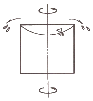
- 정지상태와 비교할 수 없다.
- 정지상태에 비해 변함이 없다.
- 정지상태에 비해 20%만큼 증가한다.
- 정지상태에 비해 20%만큼 감소한다.
(정답률: 53%)
46. 유선 위 한 점의 x, y, z축에 대한 좌표를 (x, y, z), x, y, z축 방향 속도성분을 각각 u, v, w라 할 때 서로의 관계가
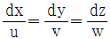
, u = -ky, v = kx, w = 0인 흐름에서 유선의 형태는? (단, k는 상수)- 원
- 직선
- 타원
- 쌍곡선
(정답률: 53%)
47. 수로 폭이 3m인 직사각형 개수로에서 비에너지가 1.5m일 경우의 최대유량은? (단, 에너지 보정계수는 1.0이다.)
- 9.39 m3/s
- 11.50 m3/s
- 14.09 m3/s
- 17.25 m3/s
(정답률: 34%)
48. 폭이 넓은 개수로(R≒hc)에서 Chezy의 평균유속계수 C=29, 수로경사
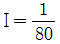
인 하천의 흐름 상태는? (단, α = 1.11)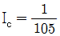
로 사류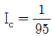
로 사류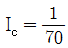
로 상류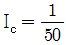
로 상류
(정답률: 40%)
49. 오리피스에서 수축계수의 정의와 그 크기로 옳은 것은? (단, ao : 수축단면적, a : 오리피스 단면적, Vo : 수축단면의 유속, V : 이론유속)
(정답률: 52%)
50. DAD 해석에 관련된 것으로 옳은 것은?
- 수심-단면적 홍수기간
- 적설량-분포면적-적설일수
- 강우깊이-유역면적-강우기간
- 강우깊이-유수단면적-최대수심
(정답률: 64%)
51. 동수반지름(R)이 10m, 동수경사(I)가 1/200 관로의 마찰손실계수(f)가 0.04일 때 유속은?
- 8.9m/s
- 9.9m/s
- 11.3m/s
- 12.3m/s
(정답률: 40%)
52. 단위유량도(Unit hydrograph)를 작성함에 있어서 기본 가정에 해당되지 않는 것은?
- 비례 가정
- 중첩 가정
- 직접 유출의 가정
- 일정 기저시간의 가정
(정답률: 54%)
53. 밀도가 ρ인 액체에 지름 d인 모세관을 연직으로 세웠을 경우 이 모세관 내에 상승한 액체의 높이는? (단, T : 표면장력, θ : 접촉각)
(정답률: 46%)
54. 관수로에 물이 흐를 때 층류가 되는 레이놀즈수(Re, Reynolds Number)의 범위는?
- Re ＜ 2000
- 2000 ＜ Re ＜ 3000
- 3000 ＜ Rc ＜ 4000
- Re ＞ 4000
(정답률: 64%)
55. 정수 중의 정면에 작용하는 압력프리즘에 관한 성질 중 틀린 것은?
- 전수압의 크기는 압력프리즘의 면적과 같다.
- 전수압의 작용선은 압력프리즘의 도심을 통과한다.
- 수면에 수평한 평면의 경우 압력프리즘은 직사각형이다.
- 한 쪽 끝이 수면에 닿는 평면의 경우에는 삼각형이다.
(정답률: 34%)
56. 수로의 경사 및 단면의 형상이 주어질 때 최대 유량이 흐르는 조건은?
- 수심이 최소이거나 경심이 최대일 때
- 윤변이 최대이거나 경심이 최소일 때
- 윤변이 최소이거나 경심이 최대일 때
- 수로폭이 최소이거나 수심이 최대일 때
(정답률: 59%)
57. 단순 수문곡선의 분리방법이 아닌 것은?
- N-day 법
- S-curve 법
- 수평직선 분리법
- 지하수 감수곡선법
(정답률: 41%)
58. 지하수의 투수계수와 관계가 없는 것은?
- 토사의 형상
- 토사의 입도
- 물의 단위중량
- 토사의 단위중량
(정답률: 58%)
59. 0.3m3/s의 물을 살양정 45m의 높이로 양수하는 데 필요한 펌프의 동력은? (단, 마찰손실수두는 18.6m이다.)
- 186.98 kW
- 196.98 kW
- 214.4 kW
- 224.4 kW
(정답률: 53%)
60. 지하수의 흐름에 대한 Darcy의 법칙은? (단, V : 유속, Δh : 길이 ΔL 에 대한 손실수두, k : 투수계수)
(정답률: 57%)
4과목: 철근콘크리트 및 강구조
61. 그림과 같은 임의 단면에서 등가 직사각형 응력분포가 빗금 친 부분으로 나타났다면 철근량(As)은? (단, fck = 21MPa, fy = 400 MPa)
- 874 mm2
- 1161 mm2
- 1543 mm2
- 2109 mm2
(정답률: 43%)
62. 다음 설명 중 옳지 않은 것은?
- 과소철근 단면에서는 파괴 시 중립축은 위로 조금 올라간다.
- 과다철근 단면인 경우 강도설계에서 철근의 응력은 철근의 변형률에 비례한다.
- 과소철근 단면인 보는 철근량이 적어 변형이 갑자기 증가하면서 취성파괴를 일으킨다.
- 과소철근 단면에서는 계수하중에 의해 철근의 인장응력이 먼저 항복강도에 도달된 후 파괴된다.
(정답률: 42%)
63. T형 보에서 주철근의 보의 방향과 같은 방향일 때 하중의 직접적으로 플랜지에 작용하게 되면 플랜지가 아래로 휘면서 파괴될 수 있다. 이 휨 파괴를 방지하기 위해서 배치하는 철근은?
- 연결철근
- 표피철근
- 종방향 철근
- 횡방향 철근
(정답률: 41%)
64. 그림과 같이 P = 300 kN 의 응장응력이 작용하는 판 두께 10mm인 철판에 ø19mm 인 리벳을 사용하여 접합할 때 소요 리벳 수는? (단, 허용전단응력 = 110 MPa, 허용지압응력 = 220 MPa 이다.)
- 8개
- 10개
- 12개
- 14개
(정답률: 39%)
65. PS 강재응력 fps = 1200 MPa, PS 강재 도심 위치에서 콘크리트의 압축응력 fc = 7 MPa 일 때, 크리프에 의한 PS 강재의 인장응력 감소율은? (단, 크리프 계수는 2 이고, 탄성계수비는 6 이다.)
- 7%
- 8%
- 9%
- 10%
(정답률: 32%)
66. 다음 중 최소 전단철근을 배치하지 않아도 되는 경우가 아닌 것은? (단, 인 경우이며, 콘크리트구조 전단 및 비틀림 설계기준에 따른다.)
- 슬래브와 기초판
- 전체깊이가 450mm 이하인 보
- 교대 벽체 및 날개벽, 옹벽의 백체, 암거 등과 같이 휨이 주거동인 판부재
- 전단철근이 없어도 계수휨모멘트와 계수전단력에 저항할 수 있다는 것을 실험에 의해 확인할 수 있는 경우
(정답률: 52%)
67. 옹벽의 구조해석에 대한 설명으로 틀린 것은? (단, 기타 콘크리트구조 설계기준에 따른다.)
- 부벽식 옹벽의 전면벽은 2변 지지된 1방향 슬래브로 설계하여야 한다.
- 뒷부벽은 T형보로 설계하여야 하며, 앞부벽은 직사각형보로 설계하여야 한다.
- 저판의 뒷굽판은 정확한 방법이 사용되지 않는 한, 뒷굽판 상부에 재하되는 모든 하중을 지지하도록 설계하여야 한다.
- 캔틸레버식 옹벽의 저판은 전면벽과의 접합부를 고정단으로 간주한 캔틸레버로 가정하여 단면을 설계할 수 있다.
(정답률: 51%)
68. 부분 프리스트레싱(partial prestressing)에 대한 설명으로 옳은 것은?
- 부재단면의 일부에만 프리스트레스를 도입하는 방법
- 구조물에 부분적으로 프리스트레스트 콘크리트 부재를 사용하는 방법
- 사용하중 작용 시 프리스트레스트 콘크리트 부재 단면의 일부에 인장응력이 생기는 것을 허용하는 방법
- 프리스트레스트 콘크리트 부재 설계 시 부재 하단에만 프리스트레스를 주고 부재 상단에는 프리스트레스 하지 않는 방법
(정답률: 52%)
69. 그림과 같은 T형 단면을 강도설계법으로 해석 할 경우, 플랜지 내민 부분의 압축력과 균형을 이루기 위한 철근 단면적(Asf)은? (단, fck = 21 MPa, fy = 400 MPa 이다.)
- 1175.2 mm2
- 1275.0 mm2
- 1375.8 mm2
- 2677.5 mm2
(정답률: 48%)
70. 설계기준압축강도(fck)가 24 MPa이고, 쪼갬인장강도(fsp)가 2.4 MPa인 경량골재 콘크리트에 적용하는 경량콘크리트계수(λ)는?
- 0.75
- 0.81
- 0.87
- 0.93
(정답률: 43%)
71. 단면이 300mm × 300mm 인 철근콘크리트 보의 인장부에 균열이 발생할 때의 모멘트(Mcr)가 13.9 kN·m이다. 이 콘크리트의 설계기준압축강도(fck)는? (단, 보통중량콘크리트이다.)
- 18 MPa
- 21 MPa
- 24 MPa
- 27 MPa
(정답률: 48%)
72. 휨을 받는 인잔 이형철근으로 4-D25 철근이 배치되어 있을 경우 그림과 같은 직사각형 단면 보의 기본정착길이(lab)는? (단, 철근의 공칭지름 = 25.4 mm, D25철근 1개의 단면적 = 507 mm2, fck = 24 MPa, fy = 400 MPa, 보통중량콘크리트이다.)
- 519 mm
- 1150 mm
- 1245 mm
- 1400 mm
(정답률: 44%)
73. 2방향 슬래브 설계에 사용되는 직접설계법의 제한 사항으로 틀린 것은?
- 각 방향으로 2경간 이상 연속되어야 한다.
- 각 방향으로 연속한 받침부 중심간 경간 차이는 긴 경간의 1/3 이하이어야 한다.
- 연속한 기둥 중심선을 기준으로 기둥의 어긋남은 그 방향 경간의 10% 이하이어야 한다.
- 모든 하중은 슬래브 판 전체에 걸쳐 등분포된 연직하중이어야 하며, 활하중은 고정하중의 2배 이하이어야 한다.
(정답률: 33%)
74. 철근콘크리트 보에서 스터럽을 배근하는 주목적으로 옳은 것은?
- 철근의 인장강도가 부족하기 때문에
- 콘크리트의 탄성이 부족하기 때문에
- 콘크리트의 사인장강도가 부족하기 때문에
- 철근과 콘크리트의 부착강도가 부족하기 때문에
(정답률: 52%)
75. 그림과 같이 긴장재를 포물선으로 배치하고, P = 2500 kN 으로 긴장했을 때 발생하는 등분포 상항력을 등가하중의 개념으로 구한 값은?
- 10 kN/m
- 15 kN/m
- 20 kN/m
- 25 kN/m
(정답률: 49%)
76. 순단면이 볼트의 구멍 하나를 제외한 단면(즉, A-B-C 단면)과 같도록 피치(s)를 결정하면? (단, 구멍의 지름은 18mm이다.)
- 50 mm
- 55 mm
- 60 mm
- 65 mm
(정답률: 53%)
77. 단철근 직사각형 보가 균형단면이 되기 위한 압축연단에서 중립축까지 거리는? (단, fy = 300 MPa, d = 600 mm 이며 강도설계법에 의한다.)
- 494 mm
- 400 mm
- 390 mm
- 293 mm
(정답률: 42%)
78. 철골 압축재의 좌굴 안정성에 대한 설명 중 틀린 것은?
- 좌굴길이가 길수록 유리하다.
- 단면2차반지름이 클수록 유리하다.
- 힌지지지보다 고정지지가 유리하다.
- 단면2차모멘트 값이 클수록 유리하다.
(정답률: 55%)
79. 다음 중 공칭축강도에서 최외단 인장철근의 순인장변형률(εt)를 계산하는 경우에 제외되는 것은? (단, 콘크리트구조 해석과 설계 원칙에 따른다.)
- 활하중에 의한 변형률
- 고정하중에 의한 변형률
- 지붕활하중에 의한 변형률
- 유효프리스트레스 휨에 의한 변형률
(정답률: 38%)
80. 단철근 직사각형보에서 fck = 32 MPa 이라면 등가직사각형 응력블록과 관계된 계수 β1은?
- 0.850
- 0.836
- 0.822
- 0.815
(정답률: 51%)
5과목: 토질 및 기초
81. 지표면에 집중하중이 작용할 때, 지중연직 응력증가량(Δσz)에 관한 설명 중 옳은 것은? (단, Boussinesq 이론을 사용)
- 탄성계수 E에 무관하다.
- 탄성계수 E에 정비례한다.
- 탄성계수 E의 제곱에 정비례한다.
- 탄성계수 E의 제곱에 반비례한다.
(정답률: 38%)
82. 통일분류법에 의해 흙의 MH로 분류되었다면, 이 흙의 공학적 성질로 가장 옳은 것은?
- 액성한계가 50% 이하인 점토이다.
- 액성한계가 50% 이상인 실트이다.
- 소성한계가 50% 이하인 실트이다.
- 소성한계가 50% 이상인 점토이다.
(정답률: 43%)
83. 흙 시료의 일축압축시험 결과 일축압축강도가 0.3 MPa이었다. 이 흙의 점착력은? (단, ø = 0 인 점토)
- 0.1 MPa
- 0.15 MPa
- 0.3 MPa
- 0.6 MPa
(정답률: 51%)
84. 흙의 다짐에 대한 설명으로 틀린 것은?
- 최적함수비는 흙의 종류와 다짐 에너지에 따라 다르다.
- 일반적으로 조립토일수록 다짐곡선의 기울기가 급하다.
- 흙이 조립토에 가까울수록 최적함수비가 커지며 최대건조단위중량은 작아진다.
- 함수비의 변화에 따라 건조단위중량이 변하는데 건조단위중량이 가장 클 때의 함수비를 최적함수비라 한다.
(정답률: 47%)
85. 어떤 흙에 대해서 직접 전단시험을 한 결과 수직응력이 1.0 MPa 일 때 전단저항이 0.5 MPa 이었고, 또 수직응력이 2.0 MPa 일 때에는 전단저항이 0.8 MPa 이었다. 이 흙의 점착력은?
- 0.2 MPa
- 0.3 MPa
- 0.8 MPa
- 1.0 MPa
(정답률: 43%)
86. 널말뚝을 모래지반에 5m 깊이로 박았을 때 상류와 하류의 수두차가 4m 이었다. 이때 모래지반의 포화단위중량이 19.62 kN/m3 이다. 현재 이 지반의 분사현상에 대한 안전율은? (단, 물의 단위중량은 9.81 kN/m3 이다.)
- 0.85
- 1.25
- 1.85
- 2.25
(정답률: 44%)
87. Terzaghi는 포화점토에 대한 1차 압밀이론에서 수학적 해를 구하기 위하여 다음과 같은 가정을 하였다. 이 중 옳지 않은 것은?
- 흙은 균질하다.
- 흙은 완전히 포화되어 있다.
- 흙 입자와 물의 압축성을 고려한다.
- 흙 속에서의 물의 이동은 Darcy 법칙을 따른다.
(정답률: 50%)
88. 모래치환법에 의한 밀도 시험을 수행한 결과 퍼낸 흙의 체적과 질량이 각각 365.0 cm3, 745 g 이었으며, 함수비는 12.5% 였다. 흙의 비중이 2.65이며, 실내표준다짐 시 최대건조밀도가 1.90 t/m3일 때 상대다짐도는?
- 88.7%
- 93.1%
- 95.3%
- 97.8%
(정답률: 48%)
89. 토질조사에 대한 설명 중 옳지 않은 것은?
- 표준관입시험은 정적인 사운딩이다.
- 보링의 깊이는 설계의 형태 및 크기에 따라 변한다.
- 보링의 위치와 수는 지형조건 및 설계형태에 따라 변한다.
- 보링 구멍은 사용 후에 흙이나 시멘트 그라우트로 메워야 한다.
(정답률: 51%)
90. 연약지반 처리공법 중 sand drain 공법에서 연직 및 수평 방향을 고려한 평균 압밀도 U는? (단, Uv = 0.20, Uh = 0.71 이다.)
- 0.573
- 0.697
- 0.712
- 0.768
(정답률: 43%)
91. Δh1 = 5 이고, kv2 = 10 kv1일 때, kv3 의 크기는?
- 1.0 kv1
- 1.5 kv1
- 2.0 kv1
- 2.5 kv1
(정답률: 45%)
92. 그림과 같은 사면에서 활동에 대한 안전율은?
- 1.30
- 1.50
- 1.70
- 1.90
(정답률: 41%)
93. 흙의 투수계수(k)에 관한 설명으로 옳은 것은?
- 투수계수(k)는 물의 단위중량에 반비례한다.
- 투수계수(k)는 입경의 제곱에 반비례한다.
- 투수계수(k)는 형상계수에 반비례한다.
- 투수계수(k)는 점성계수에 반비례한다.
(정답률: 51%)
94. 점성토 지반굴착 시 발생할 수 있는 Heaving 방지대책으로 틀린 것은?
- 지반개량을 한다.
- 지하수위를 저하시킨다.
- 널말뚝의 근입 깊이를 줄인다.
- 표토를 제거하여 하중을 작게한다.
(정답률: 47%)
95. 접지압(또는 지반반력)이 그림과 같이 되는 경우는?
- 푸팅 : 강성, 기초지반 : 점토
- 푸팅 : 강성, 기초지반 : 모래
- 푸팅 : 연성, 기초지반 : 점토
- 푸팅 : 연성, 기초지반 : 모래
(정답률: 58%)
96. 예민비가 매우 큰 연약 점토지반에 대해서 현장의 비배수 전단강도를 측정하기 위한 시험방법으로 가장 적합한 것은?
- 압밀비배수시험
- 표준관입시험
- 직접전단시험
- 현장베인시험
(정답률: 37%)
97. 직경 30cm 콘크리트 말뚝을 단동식 증기 헤머로 타입하였을 때 엔지니어링 뉴스 공식을 적용한 말뚝의 허용지지력은? (단, 타격에너지 = 36 kN·m, 해머효율 = 0.8, 손실상수 = 0.25cm, 마지막 25 mm 관입에 필요한 타격횟수 = 5 이다.)
- 640 kN
- 1280 kN
- 1920 kN
- 3840 kN
(정답률: 30%)
98. Mohr 응력원에 대한 설명 중 옳지 않은 것은?
- 임의 평면의 응력상태를 나타내는데 매우 편리하다.
- σ1과 σ3의 차의 벡터를 반지름으로 해서 그린 원이다.
- 한 면에 응력이 작용하는 경우 전단력이 0 이면, 그 연직응력을 주응력으로 가정한다.
- 평면기점(Op)은 최소 주응력이 표시되는 좌표에서 최소 주응력면과 평행하게 그은 Mohr 원과 만나는 점이다.
(정답률: 53%)
99. 연약점토 지반에 말뚝을 시공하는 경우, 말뚝을 타입 후 어느 정도 기간이 경과한 후에 재하시험을 하게 된다. 그 이유로 가장 적합한 것은?
- 말뚝에 부마찰력이 발생하기 때문이다.
- 말뚝에 주면마찰력이 발생하기 때문이다.
- 말뚝 타입 시 교란된 점토의 강도가 원래대로 회복하는데 시간이 걸리기 때문이다.
- 말뚝 타입 시 말뚝 자체가 받는 충격에 의해 두부의 손상이 발생할 수 있어 안정화에 시간이 걸리기 때문이다.
(정답률: 53%)
100. 함수비 15%인 흙 2300g이 있다. 이 흙의 함수비를 25%가 되도록 증가시키려면 얼마의 물을 가해야 하는가?
- 200g
- 230g
- 345g
- 575g
(정답률: 43%)
6과목: 상하수도공학
101. 지표수를 수원으로 하는 경우의 상수시설 배치순서로 가장 적합한 것은?
- 취수탑 → 침사지 → 응집침전지 → 여과지 → 배수지
- 취수구 → 약품침전지 → 혼화지 → 여과지 → 배수지
- 집수매거 → 응집침전지 → 침사지 → 여과지 → 배수지
- 취수문 → 여과지 → 보통침전지 → 배수탑 → 배수관망
(정답률: 56%)
102. 정수장 배출수 처리의 일반적인 순서로 옳은 것은?
- 농축 → 조정 → 탈수 → 처분
- 농축 → 탈수 → 조정 → 처분
- 조정 → 농축 → 탈수 → 처분
- 조정 → 탈수 → 농축 → 처분
(정답률: 47%)
103. 활성슬러지법에서 MLSS가 의미하는 것은?
- 폐수 중의 부유물질
- 방류수 중의 부유물질
- 포기조 내의 부유물질
- 반송슬러지의 부유물질
(정답률: 49%)
104. 다음과 같은 조건으로 입자가 복합되어 있는 플록의 침강속도를 Stokes의 법칙으로 구하면 전체가 흙 입자로 된 플록의 침강속도에 비해 침강속도는 몇 % 정도인가? (단, 비중이 2.5인 흙 입자의 전체부피 중 차지하는 부피는 50% 이고, 플록의 나머지 50% 부분의 비중은 0.9 이며, 입자의 지름은 10mm 이다.)
- 38%
- 48%
- 58%
- 68%
(정답률: 23%)
1⑤. 관로를 개수로와 관수로로 구분하는 기준은?
- 자유수면 유무
- 지하매설 유무
- 하수관과 상수관
- 콘크리트관과 주철관
(정답률: 56%)
106. 상수도의 계통을 올바르게 나타낸 것은?
- 취수 → 송수 → 도수 → 정수 → 급수 → 배수
- 취수 → 도수 → 정수 → 송수 → 배수 → 급수
- 취수 → 정수 → 도수 → 급수 → 배수 → 송수
- 도수 → 취수 → 정수 → 송수 → 배수 → 급수
(정답률: 62%)
107. 활성슬러지법의 여러 가지 변법 중에서 잉여슬러지량을 현저하게 감소시키고 슬러지 처리를 용이하게 하기 위해 개발된 방법으로서 포기시간이 16~24시간, F/M비가 0.03 ~ 0.⑤ kgBOD/kgSS·day 정도의 낮은 BOD-SS부하로 운전하는 방식은?
- 장기포기법
- 순산소포기법
- 계단식 포기법
- 표준활성슬러지법
(정답률: 48%)
108. 하수관로 설계 기준에 대한 설명으로 옳지 않은 것은?
- 관경은 하류로 갈수록 크게 한다.
- 유속은 하류로 갈수록 작게 한다.
- 경사는 하류로 갈수록 완만하게 한다.
- 오수관로의 유속은 0.6 ~ 3m/s가 적당하다.
(정답률: 54%)
109. 호수의 부영양화에 대한 설명으로 옳지 않은 것은?
- 부영양화의 주된 원인물질은 질소와 인이다.
- 조류의 이상증식으로 인하여 물의 투명도가 저하된다.
- 조류의 발생이 과다하면 정수공정에서 여과지를 폐색시킨다.
- 조류제거 약품으로는 일반적으로 황산알루미늄을 사용한다.
(정답률: 54%)
110. 상수도 관로 시설에 대한 설명 중 옳지 않은 것은?
- 배수관 내의 최소 동수압은 150 kPa이다.
- 상수도의 송수방식에는 자연유하식과 펌프가압식이 있다.
- 도수거가 하천이나 깊은 계곡을 횡단할 때는 수로교를 가설한다.
- 급수관을 공공도로에 부설할 경우 다른 매설물과의 간격을 15cm 이상 확보한다.
(정답률: 48%)
111. 하수도시설기준에 의한 우수관로 및 합류관로거의 표준 최소 관경은?
- 200 mm
- 250 mm
- 300 mm
- 350 mm
(정답률: 53%)
112. 계획오수량을 생활오수량, 공장폐수량 및 지하수량으로 구분할 때, 이것에 대한 설명으로 옳지 않은 것은?
- 지하수량은 1인 1일 최대오수량의 10 ~ 20%로 한다.
- 계획1일평균오수량은 계획1일최대오수량의 70 ~ 80%를 표준으로 한다.
- 합류식에서 우천 시 계획오수량은 원칙적으로 계획시간 최대오수량의 2배 이상으로 한다.
- 계획1일최대오수량은 1인1일최대오수량에 계획인구를 곱한 후, 여기에 공장폐수량 지하수량 및 기타 배수량을 더한 것으로 한다.
(정답률: 54%)
113. 관로별 계획하수량에 대한 설명으로 옳지 않은 것은?
- 우수관로는 계획우수량으로 한다.
- 차집관로는 우천 시 계획오수량으로 한다.
- 오수관로의 계획오수량은 계획1일최대 오수량으로 한다.
- 합류식 관로에서는 계획시간최대오수량에 계획우수량을 합한 것으로 한다.
(정답률: 46%)
114. 막여과시설의 약품세척에서 무기물질 제거에 사용되는 약품이 아닌 것은?
- 염산
- 황산
- 구연산
- 차아염소산나트륨
(정답률: 50%)
115. 어느 하천의 자정작용을 나타낸 아래 용존 산소 곡선을 보고 어떤 물질이 하천으로 유입되었다고 보는 것이 가장 타당한가?
- 생활하수
- 질산성질소
- 농도가 매우 낮은 폐알칼리
- 농도가 매우 낮은 폐산(廢散)
(정답률: 55%)
116. 지름 300mm의 주철관을 설치할 때, 40 kgf/cm2 의 수압을 받는 부분에서는 주철관의 두께는 최소한 얼마로 하여야 하는가? (단, 허용인장응력 σta = 1400 kgf/cm2 이다.)
- 3.1 mm
- 3.6 mm
- 4.3 mm
- 4.8 mm
(정답률: 33%)
117. 원수의 알칼리도가 50 ppm, 탁도가 500 ppm 일 때 황산알루미늄의 소비량은 60 ppm 이다. 이러한 원수가 48000 m3/day 로 흐를 때 6% 용액의 황산알루미늄의 1일 필요량은? (단, 액체의 비중을 1로 가정한다.)
- 48.0 m3/day
- 50.6 m3/day
- 53.0 m3/day
- 57.6 m3/day
(정답률: 32%)
118. 일반적인 정수과정으로서 옳은 것은?
- 스크린 → 소독 → 여과 → 응집침전
- 스크린 → 응집침전 → 여과 → 소독
- 여과 → 응집침전 → 스크린 → 소독
- 응집침전 → 여과 → 소독 → 스크린
(정답률: 53%)
119. 먹는 물의 수질기준 항목인 화학물질과 분류 항목의 조합이 옳지 않은 것은?
- 황산이온 – 심미적
- 염소이온 – 심미적
- 질산성질소 – 심미적
- 트리클로로에틸렌 – 건강
(정답률: 41%)
120. 일반적으로 작용하는 펌프의 특성곡선에 포함되지 않는 것은?
- 토출량-양정 곡선
- 토출량-효율 곡선
- 토출량-축동력 곡선
- 토출량-회전도 곡선
(정답률: 50%)